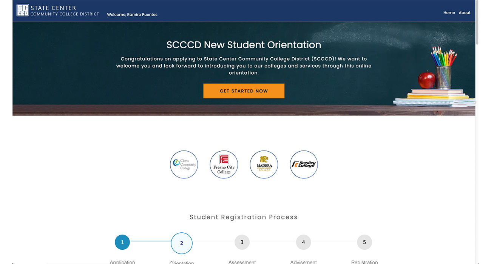
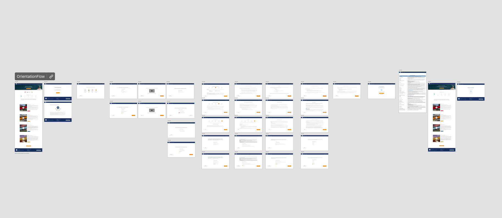
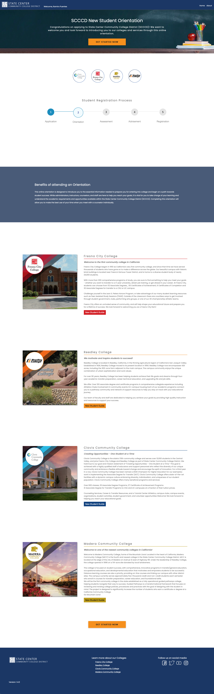

CASE STUDY
Student Orientation



Project Overview
The goal of this project was to enhance the user experience by improving design, accessibility, and readability while introducing a 'save progress' feature that allows students to seamlessly continue their work. The redesign focused on creating a more intuitive and visually clear interface that adheres to WCAG accessibility standards, ensuring an inclusive and user-friendly experience for all students
In this project, I led the redesign of a State Center Community College District's online orientation platform aimed at enhancing user experience for incoming students. My primary responsibilities included conducting user research, developing wireframes, and implementing the front-end design. One significant challenge was ensuring accessibility compliance, which I addressed by integrating WCAG guidelines into the design process. The project utilized tools such as Adobe XD for design and .Net for development. As a result, the platform saw a 25% increase in user engagement, and I gained valuable experience in accessible design practices.
In addition to developing the Orientation web application, I also designed all graphics and images for the site, ensuring a cohesive visual identity that aligns with the user experience and accessibility goals.
| Tech Stack | .NET Core, SQL Server, JavaScript, Bootstrap |
|---|---|
| Project Type | Full-stack web app |
| Role | Lead Developer, UX Designer |
| Completion Date | Nov 2024 |
Related Project
This project is closely connected to the Orientation Admin Dashboard. While the Orientation project provides students with a structured onboarding experience, the Orientation Admin Dashboard enables IT staff to manage and update the quiz efficiently.
View Orientation Admin Dashboard Project
Key Features
- Modernized & User-Friendly Design: Clean, structured UI with intuitive navigation and a mobile-responsive layout.
- Enhanced Accessibility (WCAG Compliant): Improved color contrast, keyboard navigability, ARIA labels, and screen reader support.
- Improved Readability: Larger fonts, better spacing, simplified layouts, and optional dark mode for optimal viewing.
- Save & Resume Progress: Allows students to continue where they left off, reducing frustration and improving usability.
- Performance & Optimization: Fast-loading pages, smooth user experience, and optimized backend logic.
- Secure & Scalable Architecture: Secure authentication and a scalable design for future feature expansions.
- Multilingual Support: Users can choose from multiple languages to enhance accessibility for diverse backgrounds.
- Administrative Interface: A dedicated admin panel that enables IT Personnel to easily update and maintain orientation content, ensuring information accuracy and timelines.
- Custom Graphics & UI Design: Created all visual assets, including illustrations, icons, and banners, ensuring a polished and engaging user interface.

Project Gallery




Challenges & Solutions
Challenge
Coordinating with staff across multiple campuses posed challenges in maintaining focus and achieving consensus. Frequent discussions were necessary to align on priorities, with the understanding that additional changes could be incorporated in subsequent releases post-launch.
Solution
We implemented structured communication strategies and established clear protocols for decision-making. This approach ensured that all team members remained focused on the project's objectives, facilitating timely consensus and allowing for the seamless integration of future enhancements after the initial launch.

Lessons Learned & Future Improvements
Advanced SQL Query Optimization
This project deepened my experience with SQL query optimization and caching strategies, especially under real-world data loads.
Designing for High-Traffic Environments
Building this experience improved my ability to design for high-traffic environments, balancing performance with usability.
Future Improvement: Real-Time Updates via WebSockets
A future enhancement could implement real-time updates using WebSockets, keeping data in sync without requiring a page reload.
EXPLORE MORE
Continue through the portfolio.
Browse the complete project collection, or reach out if you would like to discuss the engineering and design decisions behind this work.